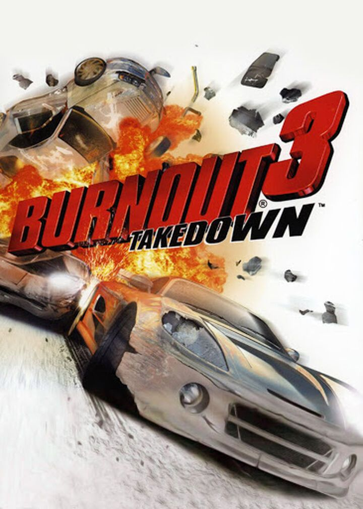
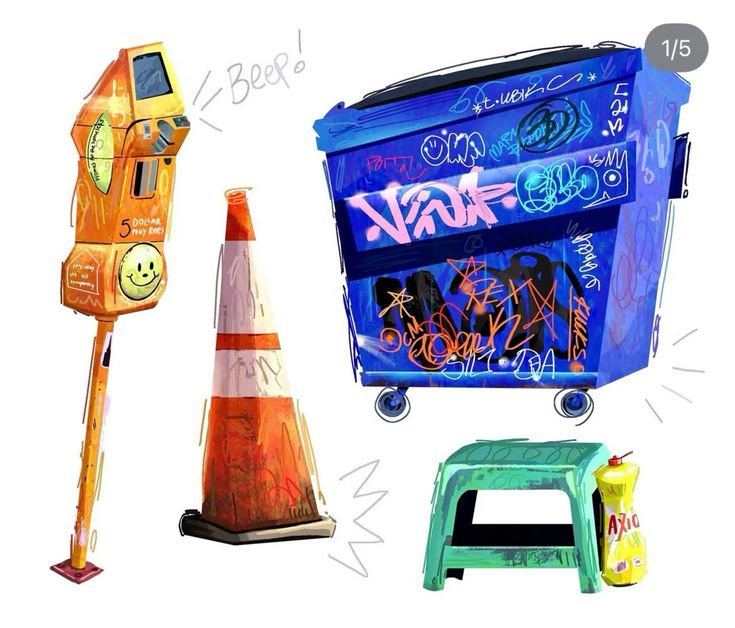
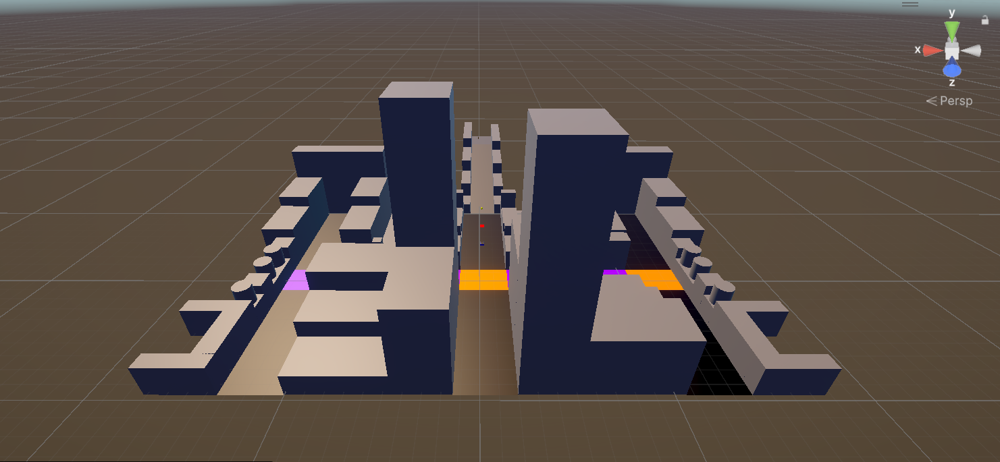
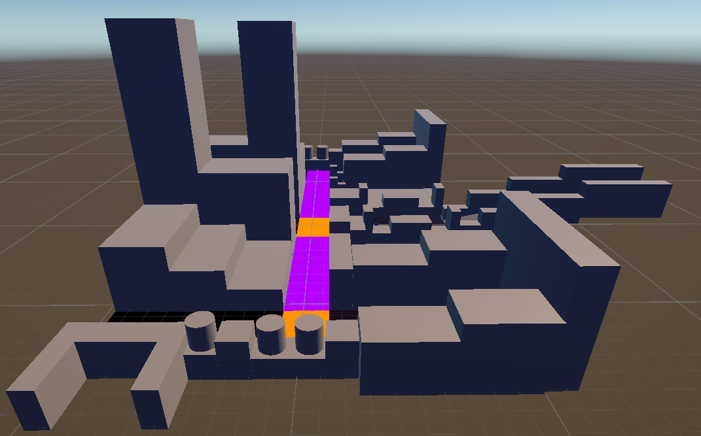
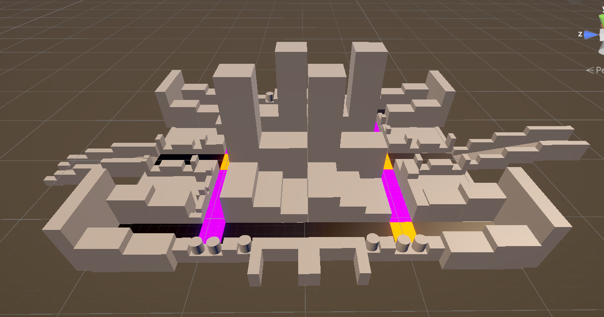
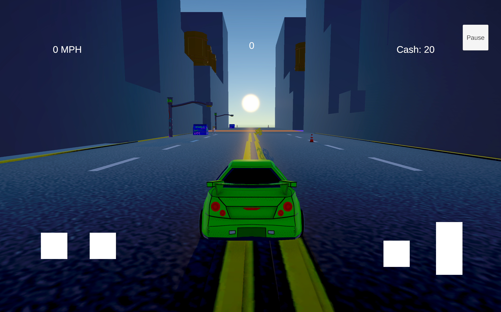
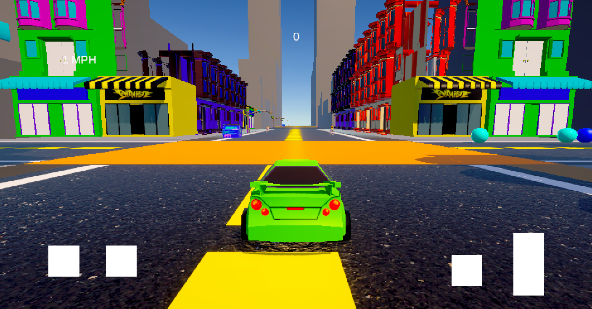
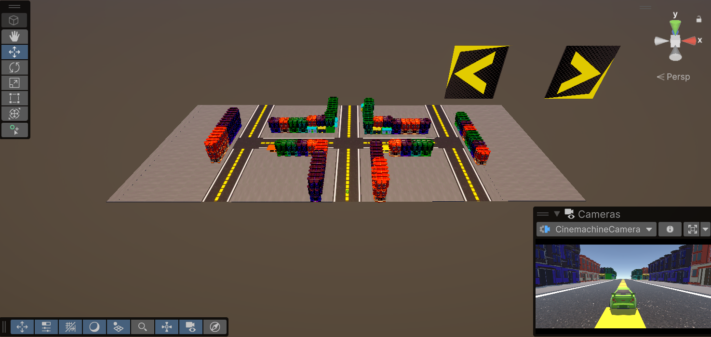
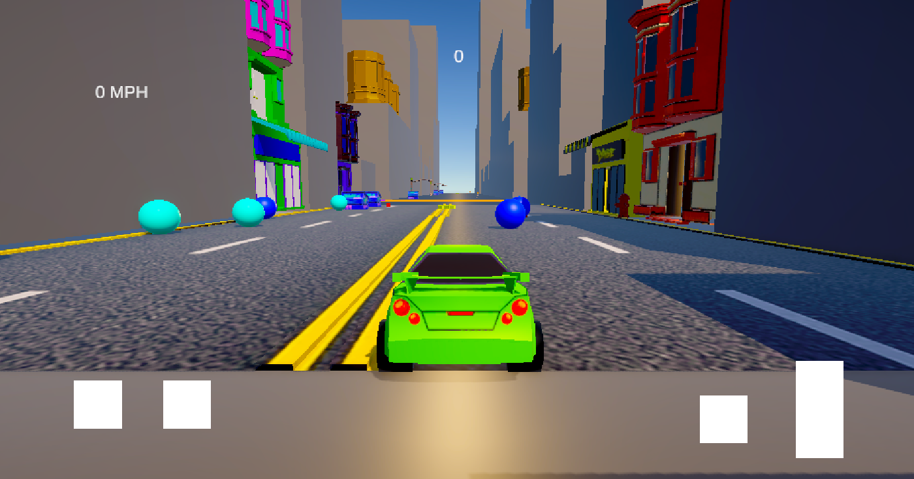
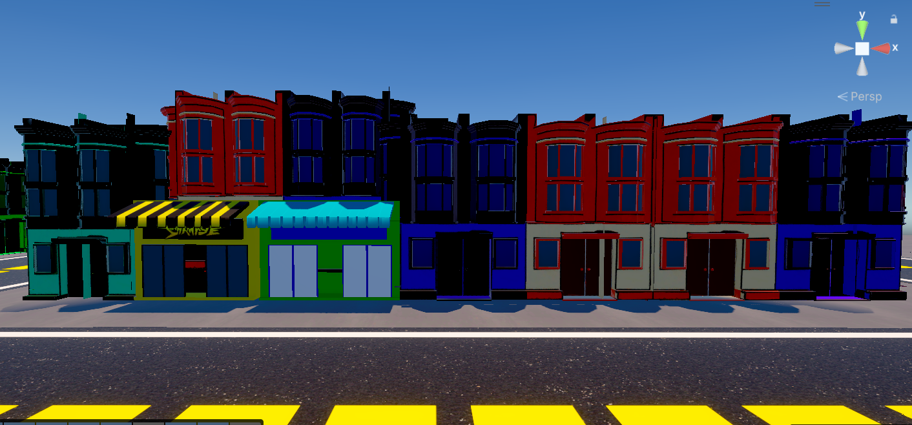

Vertical Slice
Project Overview
Carnage is a fast-paced mobile game inspired by Burnout 3: Takedown's iconic crash mode. Players navigate dense traffic zones to chain collisions and score points across two fully playable city tracks — San Francisco and Las Vegas. I pitched the concept to the team and served as level designer across the full production cycle.
Goals
- Design city layouts with distinct visual and structural identities that create unique gameplay experiences
- Build variability through modular segments and dynamic procedural placement to keep each run unpredictable
- Balance object density and procedural systems for mobile performance while maintaining readability
Carnage — Official marketing trailer
Concept & Inspiration
The concept originated from my pitch to the team, inspired by my long-time love for Burnout 3: Takedown. While many student projects lean toward platformers or small-scope ideas, I wanted something different — A high-energy driving game that brought large-scale chaos to mobile.
A cel-shaded art style gave the project a distinctive modern look while maintaining performance efficiency for mobile hardware. The result was a game with a strong visual identity that stood out from typical student projects.

Burnout 3: Takedown — Primary gameplay reference

Prop art reference — Cel-shaded visual direction
Mechanics & Feature Testing
Test 01
Car Mechanics
- Car feel and movement — Evaluating turning responsiveness, speed, and overall driving satisfaction
- Speed boost — Testing how the boost mechanic integrated with moment-to-moment driving and crash chaining
- Collision interactions — Validating that collisions felt impactful and consistent across different object types
This footage validated the driving foundation and identified adjustments needed to make movement both satisfying and chaotic — The core of what Carnage needed to feel like.
Prototyping — Car mechanics and collision testing
Test 02
Procedural Generation
- City segment spawning — Verifying that segments generated dynamically and connected seamlessly during gameplay
- Object placement — Testing how crashable objects and powerups were randomly distributed across spawned segments
- Replayability — Confirming that each run felt distinct and that procedural elements maintained challenge throughout
This testing phase confirmed the procedural system was working as intended and gave us confidence to scale it across both city tracks.
Prototyping — Procedural generation system testing
Test 03
Procedural Generation Implementation
- Segment variety — Seeing how different modular city pieces combined in real time during a full gameplay session
- Object density tuning — Evaluating whether hazard and powerup distribution felt balanced at the implemented density
- Performance validation — Confirming the system maintained acceptable mobile framerates with full procedural load
With the system fully implemented, this test gave us a clear picture of what needed tuning before we moved into final production.
Procedural generation — Full implementation playtest
Blockouts & Grayboxing
- Original blockout — I created the base layout for San Francisco, establishing the road structure, building placement, and traffic zone density
- Modular design — Segments were built to be rearranged, allowing other level designers to create variants without starting from scratch
- 10+ variants produced — The modular approach combined with procedural generation means virtually infinite layout combinations from one starting blockout
- Validated scale — Seeing the car in the blockout for the first time confirmed road widths and building proportions were correct for the gameplay feel we wanted
- Identified issues early — Early in-engine footage revealed areas where turning radius and obstacle spacing needed adjustment before art was applied

San Francisco blockout — Layout 1

San Francisco blockout — Layout 2

San Francisco blockout — Layout 3

First in-engine look — validating car scale against road width
Iteration Phase
- Art pass applied — Graybox geometry replaced with fully modeled city parts, road surfaces, and building facades that matched our cel-shaded visual direction
- Systems integration — UI components, audio, the player car, all powerups, and procedural generation were integrated together for the first time during this phase
- Full playtest environment — With all systems running simultaneously in a visually complete environment, this phase revealed how everything held up together under real gameplay conditions

San Francisco — First art pass on blockout geometry

San Francisco — Buildings and road surface refined

San Francisco — Props and set dressing fully applied
Final Design
- Iconic landmarks — San Francisco features the Transamerica Pyramid; Las Vegas features the Sphere — Both serving as visual anchors that give each track a distinct identity
- Crash Dollars economy — Players earn currency through collisions and can spend it in a car shop to unlock custom paint jobs, adding a progression layer on top of the crash gameplay
- Full polish pass — Unique collision sounds, VFX on powerup pickups, and a complete end scene round out the experience beyond just driving and crashing
Carnage — Full gameplay trailer

San Francisco — Street-level environment detail

San Francisco track — Cel-shaded in-game look

Transamerica Pyramid — San Francisco landmark anchor

Crash Dollars — In-game currency and car shop
Conclusion & Learnings
Over ten weeks, our team built a fully playable and engaging mobile driving experience. Given our limited experience with procedural generation and mobile optimization, I'm proud of what we shipped in such a short window — Especially the depth of the level design system we built around modularity and procedural variety.
Key Learnings
- Grayboxing early allowed rapid iteration and gave the team a clear shared understanding of each level's intent
- Collaborating with multiple level designers to build variants and procedural systems required clear documentation and communication
- Managing scope and timeline in a 10-week cycle pushed efficient design decisions at every stage
Areas for Growth
- Earlier planning for procedural systems would have reduced iteration time and allowed more polish
- More rigorous mobile performance testing throughout development rather than at the end
- Earlier art asset integration to better visualize level readability during the blockout phase